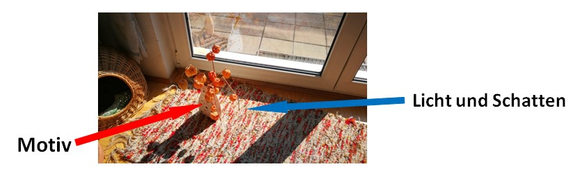
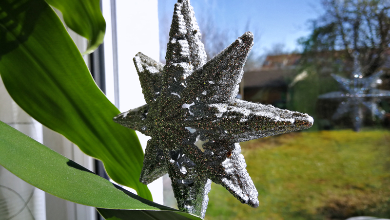
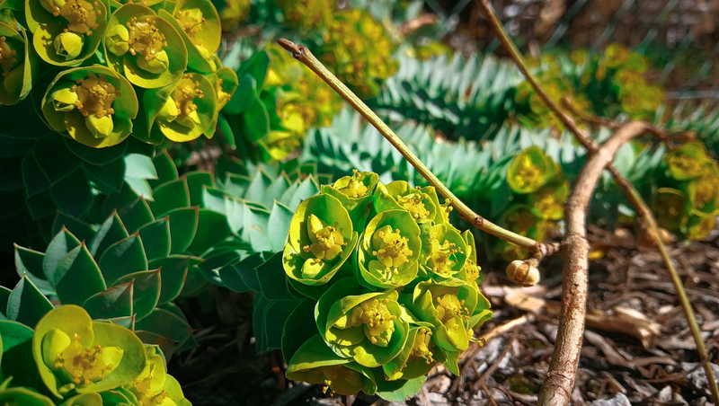
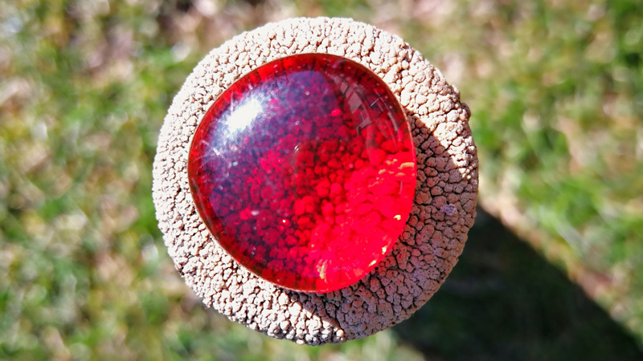
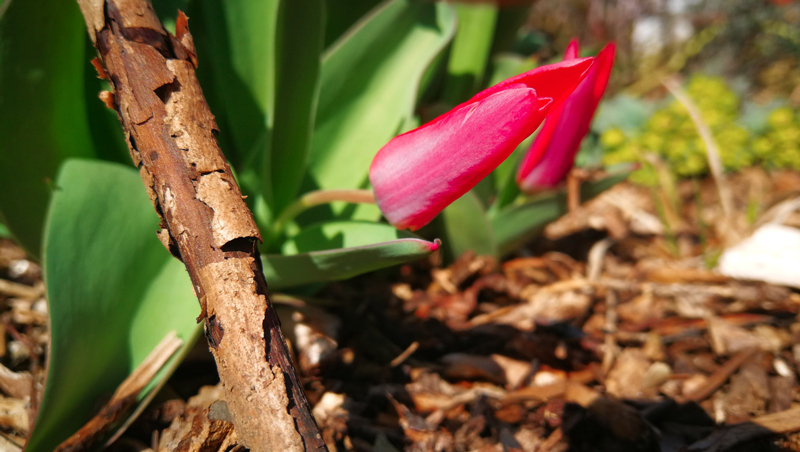

Fotografieren für Anfänger
Dir ist langweilig? Alles kommt dir bekannt und uninteressant vor? Dann probier es mal mit einem Perspektivwechsel!
Beim Fotografieren spielt die Perspektive eine wichtige Rolle. Um interessante Fotos zu schießen, ist es wichtig, eine Perspektive einzunehmen, die für das Auge ungewohnt ist.
Was brauche ich alles dafür?
Das meiste, was du brauchst, ist bereits in deinem Kopf! Schnapp dir jetzt ein Handy oder eine Kamera und schon bist du bereit.
Wie fange ich denn jetzt an?
Das ist eine gute Frage, denn aller Anfang ist schwer. Deshalb erklären wir dir Schritt für Schritt, wie du selbstständig kreativ werden kannst. Lass dich gerne von unseren Beispielen inspirieren!
Schritt 1:
Nimm dir zunächst einfach dein Handy oder deine Kamera und suche dir ein Motiv. Es kann sich dabei um alltägliche, langweilige Dinge handeln. Ändere dabei aber deine Sicht auf die Welt, denn das Schöne ist: Bei genauerem Betrachten sind fast alle Dinge interessant. Wir haben für unser Beispielbild eine ganz normale Vase mit alten Blumen darin verwendet.

Schritt 2:
Du hast ein Motiv gefunden? Sehr gut! Designe dir dein Foto selbst. Stelle das ausgewählte Motiv in schönes Licht, vor einen schönen Hintergrund, oder nimm andere Sachen hinzu, die dein Motiv unterstützen. In unserem Fall entschieden wir uns dazu, die Vase in ein schönes Licht zu setzen. Werde hier gerne selbst kreativ!

Schritt 3:
Das sieht doch schon gut aus, doch irgendwas fehlt noch… Verpasse deinem Foto nun den nötigen Feinschliff, indem du mit der Kamera eine andere Perspektive einnimmst: Geh in die Knie, stell dich auf einen Stuhl oder leg dich auf den Bauch, um eine neue Perspektive zu erhalten. Für unser nächstes Bild haben wir uns für eine nahe Perspektive mit Blick von unten entschieden. Das Sonnenlicht und der verschwommener Hintergrund lassen das Foto interessanter erscheinen.
Schritt 4:
Nutze nun dein neues Wissen und werde kreativ. Suche dir interessante Motive, gestalte deine Bilder, probiere dich aus und hab Spaß dabei! Gehe mit offenen Augen durchs Leben und du wirst feststellen, wie interessant es sogar bei dir zuhause oder auch vor deiner Haustür ist.
Hier noch ein paar Beispielfotos:


Weitere Tipps:
- “Vordergrund macht Bild gesund”: Verpasse deinem Bild einen schönen Vordergrund, um es lebendiger wirken zu lassen
- Arbeite mit Farbkontrasten zwischen Motiv und Hintergrund, z.B. hell und dunkel.
- Nutze das Licht: Abends und morgens ist es besonders schön!
- Benutze “Linien”, die deine Bildebenen verbinden (z.B. Riss, Stock, Fluss)
- Dein Motiv sieht links und rechts gleich aus? Nutze das zu deinem Vorteil!
Profi Tipp:
Spiele mit dem Fokus um den Hintergrund unscharf werden zu lassen, das lenkt die Aufmerksamkeit auf dein Motiv und lässt das Bild professioneller wirken!
Inspiration:
Deiner Phantasie sind keine Grenzen gesetzt! Falls dir Ideen fehlen, haben wir hier einige Bilder zusammengestellt, die dich inspirieren können.


Wir sind auch neugierig!
Schick uns gerne deine Bilder und wir veröffentlichen sie in der KABU-App. Und wenn du noch Fragen hast, kannst du uns gerne schreiben!
Viel Spaß beim Entdecken und Fotografieren wünscht dir Die KABU-Redaktion
Das sieht aber interessant aus. Das will ich auch probieren
💭 Sprechblase Das sieht aber interessant aus. Das will ich auch probieren
(Danke für die Tipps und die tollen Fotos an Tobias Konopac!)
Videobeitrag: Fotografieren für Anfänger
Hier findet ihr noch ein Video wie KABU seiner Freundin Betty das Fotografieren erklärt!